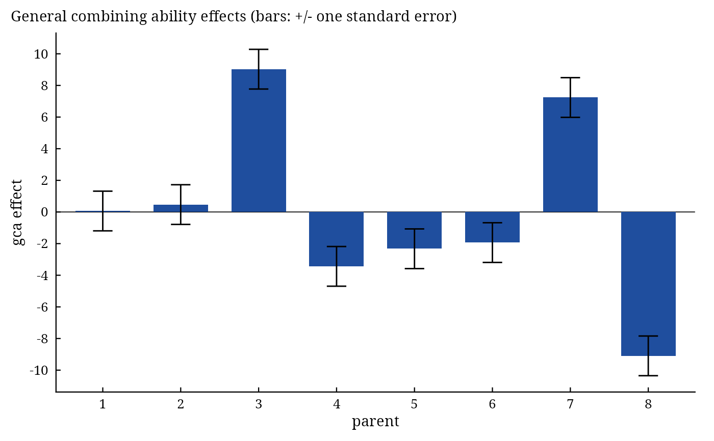

Griffing() performs the combining-ability analysis of a diallel cross by the four methods and two models of
Griffing (1956): the analysis of variance of general combining ability (gca), specific combining ability (sca) and
reciprocal effects, the estimates of the effects with their standard errors (fixed model) or the variance
components (random model), from the plot data of a randomized complete block experiment.
Usage
Griffing(
y,
Rep,
Cross1,
Cross2,
data,
Method,
Model,
Reciprocal = c("combined", "split")
)Arguments
- y
response: a column of
datagiven by name (y = Yieldory = "Yield") or a numeric vector of lengthnrow(data).- Rep
replicate (block): a column of
dataor a vector, as fory.- Cross1
female parent of each plot: a column of
dataor a vector, as fory.- Cross2
male parent of each plot: a column of
dataor a vector, as fory.- data
a data frame (or
data.table) with one row per plot.- Method
1(parents, \(F_1\) and reciprocals),2(parents and one set of \(F_1\)),3(\(F_1\) and reciprocals) or4(one set of \(F_1\)). No default.- Model
1(fixed effects) or2(random effects). No default.- Reciprocal
"combined"(default; one line for the reciprocal effects, as in earlier versions) or"split": in Methods 1 and 3 the reciprocal line is split into maternal and non-maternal parts (Cockerham and Weir 1977); see Details. Ignored in Methods 2 and 4.
Value
An object of class c("da_griffing", "da_result", "list"), with the components of earlier versions
followed by new ones:
Means\(P \times P\) matrix of cell means, female parents in rows, male parents in columns (
NAfor cells that are not part of the method).ANOVAcombining-ability analysis of variance (class
anova): linesgca,sca,reciprocals(Methods 1 and 3) andError; columnsDf,Sum Sq,Mean Sq,F value,Pr(>F).Genetic.Componentsdata frame with one column
Components: Model 1 rowsgca,sca,Reciprocal(Methods 1, 3),gca/sca; Model 2 rowsgca,sca,Reciprocal(Methods 1, 3),Error,Additive,Dominant(Dominancein Method 2),gca/sca.Effects(Model 1) \(P \times P\) matrix: gca effects on the diagonal, sca effects above it, reciprocal effects below it (Methods 1, 3;
NAin Methods 2, 4).StdErr(Model 1) named vector of standard errors of effects and of their differences: Method 1
gi, sii, sij, rij, gi_gj, sii_sjj, sii_sij, sii_sjk, sij_sik, sij_skl, rij_rkl; Method 2gi, sii, sij, gi_gj, sii_sjj, sij_sik, sij_skl; Method 3gi, sij, rij, gi_gj, sij_sik, sij_skl; Method 4gi, sij, not_defined, gi_gj, sij_sik, sij_skl.GCA(new; Model 1) named vector of gca effects \(\hat{\mathbf{g}}\).
SCA(new; Model 1) symmetric matrix of sca effects, selfs included in Methods 1 and 2.
Reciprocal(new; Model 1, Methods 1 and 3) matrix of reciprocal effects, \(\hat{R}_{ij} = -\hat{R}_{ji}\).
Maternal,NonMaternal(new; Model 1, Methods 1 and 3,
Reciprocal = "split") vector of maternal effects \(\hat{\mathbf{m}}\) and matrix of non-maternal effects \(\hat{n}_{ij}\); theStdErrvector then also hasmi,mi_mjandnij, theANOVAlinesmaternalandnon-maternalin place ofreciprocals, andGenetic.Componentsthe rowsMaternalandNonMaternalin place ofReciprocal.RCBD(new) analysis of variance of the plot data as a randomized complete block design (lines
Rep,Crosses,Residuals).
Methods: print(), summary(), plot() (gca effects with standard-error bars and the sca
effects as a heat map, residuals of the block analysis against fitted values, normal quantile plot of the
residuals, and a biplot of the cross means; which = c("gca", "sca", "biplot", "residuals", "qq")), anova(), coef(), vcov(),
confint(), fitted(), residuals(), predict(), data.table::as.data.table(x,
component =); see diallel-methods and da-methods.
Details
Data and cell means. Each plot belongs to a cross \(i \times j\) of parents \(i\) (female,
Cross1) and \(j\) (male, Cross2) and to a replicate (block). With \(P\) parents and
\(B\) replicates, the cell means form the \(P \times P\) matrix \(\mathbf{Y}\) with elements
\(Y_{ij}\); \(Y_{i\cdot}\), \(Y_{\cdot j}\) and \(Y_{\cdot\cdot}\) are its row,
column and grand totals. The four methods differ in the cells present:
| Method 1 | parents, \(F_1\) and reciprocal \(F_1\): all \(P^2\) cells |
| Method 2 | parents and one set of \(F_1\): \(P(P+1)/2\) cells |
| Method 3 | \(F_1\) and reciprocals, no parents: \(P(P-1)\) cells |
| Method 4 | one set of \(F_1\) only: \(P(P-1)/2\) cells |
In Methods 2 and 4 a cross may be recorded either way round (Cross1 = 3, Cross2 = 5 or the reverse);
it is stored with the lower-numbered parent first. Every cross of the method must be present; individual plots may
be missing. With missing plots the cell means are the least-squares means of the block analysis (block effects
summing to zero), which removes the bias a missing plot in a good or a poor block would cause, and \(B\) in the
error variance of a cell mean is the harmonic mean of the numbers of plots per cross (exact when every cross has the
same number of plots, an approximation otherwise).
Model. The mean of cross \(i \times j\) is
$$Y_{ij} = \mu + g_i + g_j + S_{ij} + R_{ij} + \bar{e}_{ij},$$
with gca effects \(\mathbf{g} = (g_1, \ldots, g_P)^\top\), symmetric sca effects
\(S_{ij} = S_{ji}\) and reciprocal effects \(R_{ij} = -R_{ji}\) (Methods 1 and 3
only), and an error of variance \(\sigma^2/B\). In the fixed model (Model = 1) the effects are
constants with \(\sum_i g_i = 0\) and the sca and reciprocal effects summing to zero over each
array; in the random model (Model = 2) they are independent random variables with variances
\(\sigma^2_g\), \(\sigma^2_s\) and \(\sigma^2_r\).
Error mean square. The plot data are analysed as a randomized complete block design with the crosses as treatments; \(MS_E\) is its residual mean square on \(f_E\) degrees of freedom. The error line of the combining-ability table is on the scale of a cell mean: sum of squares \(SS_E/B\), mean square \(\sigma^2_m = MS_E/B\).
Sums of squares (Griffing 1956; Singh and Chaudhary 2004), on the scale of cell means. Method 1: $$SS_g = \frac{1}{2P}\sum_i (Y_{i\cdot} + Y_{\cdot i})^2 - \frac{2}{P^2}Y_{\cdot\cdot}^2, \quad SS_s = \frac{1}{2}\sum_i\sum_j Y_{ij}(Y_{ij} + Y_{ji}) - \frac{1}{2P}\sum_i (Y_{i\cdot} + Y_{\cdot i})^2 + \frac{1}{P^2}Y_{\cdot\cdot}^2, \quad SS_r = \frac{1}{2}\sum_{i<j} (Y_{ij} - Y_{ji})^2,$$ on \(P-1\), \(P(P-1)/2\) and \(P(P-1)/2\) degrees of freedom. Method 2 (totals over the symmetric table, each cross counted once in each of its two arrays): $$SS_g = \frac{1}{P+2}\left[\sum_i (Y_{i\cdot} + Y_{ii})^2 - \frac{4}{P}Y_{\cdot\cdot}^2\right], \quad SS_s = \sum_{i \le j} Y_{ij}^2 - \frac{1}{P+2}\sum_i (Y_{i\cdot} + Y_{ii})^2 + \frac{2}{(P+1)(P+2)}Y_{\cdot\cdot}^2,$$ on \(P-1\) and \(P(P-1)/2\) degrees of freedom. Method 3: \(SS_g = \sum_i (Y_{i\cdot} + Y_{\cdot i})^2/(2(P-2)) - 2Y_{\cdot\cdot}^2/(P(P-2))\), \(SS_s = \frac{1}{2}\sum_{i<j}(Y_{ij}+Y_{ji})^2 - \sum_i (Y_{i\cdot} + Y_{\cdot i})^2/(2(P-2)) + Y_{\cdot\cdot}^2/((P-1)(P-2))\) on \(P(P-3)/2\) degrees of freedom, \(SS_r\) as in Method 1. Method 4: \(SS_g = \sum_i Y_{i\cdot}^2/(P-2) - 4Y_{\cdot\cdot}^2/(P(P-2))\), \(SS_s = \sum_{i<j} Y_{ij}^2 - \sum_i Y_{i\cdot}^2/(P-2) + 2Y_{\cdot\cdot}^2/((P-1)(P-2))\). These are the sums of squares of the orthogonal least-squares decomposition of the cell means into the gca, sca and reciprocal subspaces, which is how they are computed (one computation for the four methods; the closed forms above are the result).
Tests. Fixed model: every line against \(\sigma^2_m\). Random model: gca against sca, sca and reciprocals against \(\sigma^2_m\).
Effects (fixed model). Method 1: \(\hat{g}_i = (Y_{i\cdot} + Y_{\cdot i})/(2P) - Y_{\cdot\cdot}/P^2\), \(\hat{S}_{ij} = (Y_{ij} + Y_{ji})/2 - (Y_{i\cdot} + Y_{\cdot i} + Y_{j\cdot} + Y_{\cdot j})/(2P) + Y_{\cdot\cdot}/P^2\), \(\hat{R}_{ij} = (Y_{ij} - Y_{ji})/2\); Methods 2 to 4 analogously (Griffing 1956). The standard errors of the effects and of their differences are \(\sqrt{\mathrm{Var}}\) of these linear functions of the cell means with \(\sigma^2\) replaced by \(MS_E\); for Method 1 for example \(\mathrm{Var}(\hat{g}_i) = (P-1)\sigma^2_m/(2P^2)\), \(\mathrm{Var}(\hat{S}_{ii}) = (P-1)^2\sigma^2_m/P^2\), \(\mathrm{Var}(\hat{S}_{ij}) = (P^2 - 2P + 2)\sigma^2_m/(2P^2)\), \(\mathrm{Var}(\hat{R}_{ij}) = \sigma^2_m/2\), \(\mathrm{Var}(\hat{g}_i - \hat{g}_j) = \sigma^2_m/P\).
Components. Fixed model, as in Griffing (1956): Method 1 gca \((MS_g - \sigma^2_m)/(2P)\), sca \(MS_s - \sigma^2_m\), reciprocal \((MS_r - \sigma^2_m)/2\); Method 2 gca \((MS_g - \sigma^2_m)/(P+2)\), sca \(MS_s - \sigma^2_m\); Method 3 gca \((MS_g - \sigma^2_m)/(2(P-2))\), sca \((MS_s - \sigma^2_m)/2\), reciprocal as Method 1; Method 4 gca \((MS_g - \sigma^2_m)/(P-2)\), sca \(MS_s - \sigma^2_m\). Random model: the variance components solve the expected mean squares, for Method 1 $$\mathrm{E}(MS_g) = \sigma^2_m + \frac{2(P-1)}{P}\sigma^2_s + 2P\sigma^2_g, \quad \mathrm{E}(MS_s) = \sigma^2_m + \frac{2(P^2-P+1)}{P^2}\sigma^2_s, \quad \mathrm{E}(MS_r) = \sigma^2_m + 2\sigma^2_r,$$ for Method 2 \(\mathrm{E}(MS_g) = \sigma^2_m + \sigma^2_s + (P+2)\sigma^2_g\), \(\mathrm{E}(MS_s) = \sigma^2_m + \sigma^2_s\); Method 3 \(\mathrm{E}(MS_g) = \sigma^2_m + 2\sigma^2_s + 2(P-2)\sigma^2_g\), \(\mathrm{E}(MS_s) = \sigma^2_m + 2\sigma^2_s\); Method 4 \(\mathrm{E}(MS_g) = \sigma^2_m + \sigma^2_s + (P-2)\sigma^2_g\), \(\mathrm{E}(MS_s) = \sigma^2_m + \sigma^2_s\). The coefficients are computed exactly from the design, so they hold for any number of parents. Additive and dominance variances follow as \(\sigma^2_A = 2\sigma^2_g\) and \(\sigma^2_D = \sigma^2_s\) (non-inbred parents, no epistasis).
Maternal and non-maternal reciprocal effects. With Reciprocal = "split" the reciprocal effect is
written \(r_{ij} = m_i - m_j + n_{ij}\) (Cockerham and Weir 1977), where \(m_i\)
is the maternal effect of parent \(i\) (\(\sum_i m_i = 0\)) and \(n_{ij} = -n_{ji}\) the non-maternal (specific) reciprocal effect. With \(D_{ij} = (\bar{y}_{ij} - \bar{y}_{ji})/2\) the least-squares estimates are
$$\hat{m}_i = \frac{1}{P}\sum_{j \neq i} D_{ij}, \qquad \hat{n}_{ij} = D_{ij} - \hat{m}_i + \hat{m}_j,$$
and the reciprocal sum of squares \(\sum_{i \neq j} D_{ij}^2\) splits into maternal,
\(2P\sum_i \hat{m}_i^2\) on \(P - 1\) degrees of freedom, and non-maternal, the rest on
\((P - 1)(P - 2)/2\). Their expected mean squares are \(\sigma^2/B + 2\sigma^2_n +
2P\sigma^2_m\) and \(\sigma^2/B + 2\sigma^2_n\), so in Model 2 the maternal line is tested against the non-maternal line and \(\hat{\sigma}^2_m =
(MS_{mat} - MS_{nm})/(2P)\). The standard errors are \(\sqrt{(P -
1)\sigma^2/(2P^2B)}\) for \(\hat{m}_i\), \(\sqrt{\sigma^2/(PB)}\) for \(\hat{m}_i - \hat{m}_j\) and \(\sqrt{(P - 2)\sigma^2/(2PB)}\)
for \(\hat{n}_{ij}\).
Changes from version 0.6.0. The standard errors of Model 1 now use the error mean square; version 0.6.0
used the replicate mean square. In Method 2 the standard errors of \(\hat{S}_{ii}\) and
\(\hat{S}_{ij}\) were swapped in version 0.6.0. In Model 2 of Methods 1 and 3 the reciprocal line is tested
on the error degrees of freedom (version 0.6.0 used those of sca for its p-value). The third standard error of Method 4 (a Method 1 formula that has no meaning in
Method 4) is NA. The table of means keeps the parents' labels and has every parent in its rows and columns.
The sums of squares, tests, effects and components are unchanged.
References
Griffing, B. (1956). Concept of general and specific combining ability in relation to diallel crossing systems. Australian Journal of Biological Sciences, 9(4), 463–493. doi:10.1071/BI9560463
Cockerham, C. C. and Weir, B. S. (1977). Quadratic analyses of reciprocal crosses. Biometrics, 33(1), 187–203. doi:10.2307/2529312
Singh, R. K. and Chaudhary, B. D. (2004). Biometrical Methods in Quantitative Genetic Analysis. Kalyani Publishers, New Delhi.
See also
Hayman, PartialDiallel, GriffingData1 to
GriffingData4, da-methods
Other DiallelAnalysisR analyses:
GardnerEberhart(),
GriffingEnv(),
GriffingMeans(),
Hayman(),
Heterosis(),
LineTester(),
NCDesign(),
PartialDiallel()
Author
Muhammad Yaseen (myaseen208@gmail.com), Kent M. Eskridge (keskridge1@unl.edu)
Examples
#-------------------------------------------------------------
## Method 1 (parents, F1 and reciprocals), Model 1 (fixed effects)
#-------------------------------------------------------------
Griffing1Data1 <-
Griffing(
y = Yield
, Rep = Rep
, Cross1 = Cross1
, Cross2 = Cross2
, data = GriffingData1
, Method = 1
, Model = 1
)
Griffing1Data1
#> Griffing's Method 1, Model 1 (fixed effects); 8 parents, 4 replicates
#>
#> Analysis of variance
#> Df Sum Sq Mean Sq F value Pr(>F)
#> gca 7 3805 543.5 18.887 <2e-16 ***
#> sca 28 22061 787.9 27.378 <2e-16 ***
#> reciprocals 28 366 13.1 0.454 0.992
#> Error 189 5439 28.8
#> ---
#> Signif. codes: 0 ‘***’ 0.001 ‘**’ 0.01 ‘*’ 0.05 ‘.’ 0.1 ‘ ’ 1
#>
#> Components
#> Components
#> gca 32.17142
#> sca 759.10758
#> Reciprocal -7.86142
#> gca/sca 0.04238
#>
#> General combining ability effects (standard error 1.255)
#> 1 2 3 4 5 6 7 8
#> 0.06188 0.46800 9.02700 -3.43800 -2.32500 -1.93500 7.23800 -9.09600
#>
#> All components: names(x); tests of the effects: summary(x); figures: plot(x)
summary(Griffing1Data1)
#> Griffing's Method 1, Model 1 (fixed effects); 8 parents, 4 replicates
#>
#> Analysis of variance
#> Df Sum Sq Mean Sq F value Pr(>F)
#> gca 7 3805 543.5 18.887 <2e-16 ***
#> sca 28 22061 787.9 27.378 <2e-16 ***
#> reciprocals 28 366 13.1 0.454 0.992
#> Error 189 5439 28.8
#> ---
#> Signif. codes: 0 ‘***’ 0.001 ‘**’ 0.01 ‘*’ 0.05 ‘.’ 0.1 ‘ ’ 1
#>
#> Components
#> Components
#> gca 32.17142
#> sca 759.10758
#> Reciprocal -7.86142
#> gca/sca 0.04238
#>
#> General combining ability effects
#> parent Estimate StdErr t.value p.value
#> <char> <num> <num> <num> <num>
#> 1: 1 0.06188 1.255 0.04932 9.607e-01
#> 2: 2 0.46797 1.255 0.37303 7.095e-01
#> 3: 3 9.02672 1.255 7.19544 1.420e-11
#> 4: 4 -3.43797 1.255 -2.74050 6.723e-03
#> 5: 5 -2.32547 1.255 -1.85369 6.534e-02
#> 6: 6 -1.93484 1.255 -1.54232 1.247e-01
#> 7: 7 7.23750 1.255 5.76921 3.208e-08
#> 8: 8 -9.09578 1.255 -7.25050 1.034e-11
#>
#> Crosses with the largest specific combining ability effects
#> Cross1 Cross2 Estimate StdErr t.value p.value
#> <char> <char> <num> <num> <num> <num>
#> 1: 7 8 32.83 3.353 9.792 1.431e-18
#> 2: 1 4 29.66 3.353 8.846 6.417e-16
#> 3: 1 5 27.30 3.353 8.144 5.072e-14
#> 4: 3 8 25.89 3.353 7.721 6.517e-13
#> 5: 6 7 22.59 3.353 6.737 1.892e-10
Griffing1Data1$ANOVA
#> Df Sum Sq Mean Sq F value Pr(>F)
#> gca 7 3804.6 543.52 18.8868 <2e-16 ***
#> sca 28 22060.8 787.89 27.3783 <2e-16 ***
#> reciprocals 28 365.5 13.05 0.4536 0.9923
#> Error 189 5439.0 28.78
#> ---
#> Signif. codes: 0 ‘***’ 0.001 ‘**’ 0.01 ‘*’ 0.05 ‘.’ 0.1 ‘ ’ 1
Griffing1Data1$StdErr
#> gi sii sij rij gi_gj sii_sjj sii_sij sii_sjk
#> 1.254505 4.693927 3.352805 3.793266 1.896633 6.570129 6.290419 5.689898
#> sij_sik sij_skl rij_rkl
#> 5.018019 4.645783 5.364488
data.table::as.data.table(Griffing1Data1, component = "ANOVA")
#> term Df Sum Sq Mean Sq F value Pr(>F)
#> <char> <num> <num> <num> <num> <num>
#> 1: gca 7 3804.6427 543.52039 18.8868412 5.293328e-19
#> 2: sca 28 22060.7885 787.88531 27.3783005 3.518704e-52
#> 3: reciprocals 28 365.5369 13.05489 0.4536456 9.923291e-01
#> 4: Error 189 5438.9907 28.77773 NA NA
plot(Griffing1Data1)

#-------------------------------------------------------------
## Method 1, Model 2 (random effects)
#-------------------------------------------------------------
Griffing2Data1 <-
Griffing(
y = Yield
, Rep = Rep
, Cross1 = Cross1
, Cross2 = Cross2
, data = GriffingData1
, Method = 1
, Model = 2
)
Griffing2Data1$Genetic.Components
#> Components
#> gca -14.4404522
#> sca 426.1656570
#> Reciprocal -7.8614195
#> Error 28.7777288
#> Additive -28.8809045
#> Dominant 426.1656570
#> gca/sca -0.0338846
#-------------------------------------------------------------
## Method 2 (parents and one set of F1), Model 1
#-------------------------------------------------------------
Griffing1Data2 <-
Griffing(
y = Yield
, Rep = Rep
, Cross1 = Cross1
, Cross2 = Cross2
, data = GriffingData2
, Method = 2
, Model = 1
)
Griffing1Data2$ANOVA
#> Df Sum Sq Mean Sq F value Pr(>F)
#> gca 7 1850.9 264.41 9.4698 4.546e-09 ***
#> sca 28 12529.1 447.47 16.0259 < 2.2e-16 ***
#> Error 105 2931.8 27.92
#> ---
#> Signif. codes: 0 ‘***’ 0.001 ‘**’ 0.01 ‘*’ 0.05 ‘.’ 0.1 ‘ ’ 1
Griffing1Data2$GCA
#> 1 2 3 4 5 6 7 8
#> -0.31350 2.38025 5.93025 -2.65325 -4.70575 -0.71825 7.60500 -7.52475
#-------------------------------------------------------------
## Method 3 (F1 and reciprocals), Model 1
#-------------------------------------------------------------
Griffing1Data3 <-
Griffing(
y = Yield
, Rep = Rep
, Cross1 = Cross1
, Cross2 = Cross2
, data = GriffingData3
, Method = 3
, Model = 1
)
Griffing1Data3$ANOVA
#> Df Sum Sq Mean Sq F value Pr(>F)
#> gca 7 5612.4 801.78 26.4344 <2e-16 ***
#> sca 20 18336.3 916.82 30.2273 <2e-16 ***
#> reciprocals 28 365.5 13.05 0.4304 0.9948
#> Error 165 5004.6 30.33
#> ---
#> Signif. codes: 0 ‘***’ 0.001 ‘**’ 0.01 ‘*’ 0.05 ‘.’ 0.1 ‘ ’ 1
#-------------------------------------------------------------
## Method 4 (one set of F1), Model 2
#-------------------------------------------------------------
Griffing2Data4 <-
Griffing(
y = Yield
, Rep = Rep
, Cross1 = Cross1
, Cross2 = Cross2
, data = GriffingData4
, Method = 4
, Model = 2
)
Griffing2Data4$Genetic.Components
#> Components
#> gca -3.088483348
#> sca 434.040775861
#> Error 31.187045285
#> Additive -6.176966696
#> Dominant 434.040775861
#> gca/sca -0.007115653